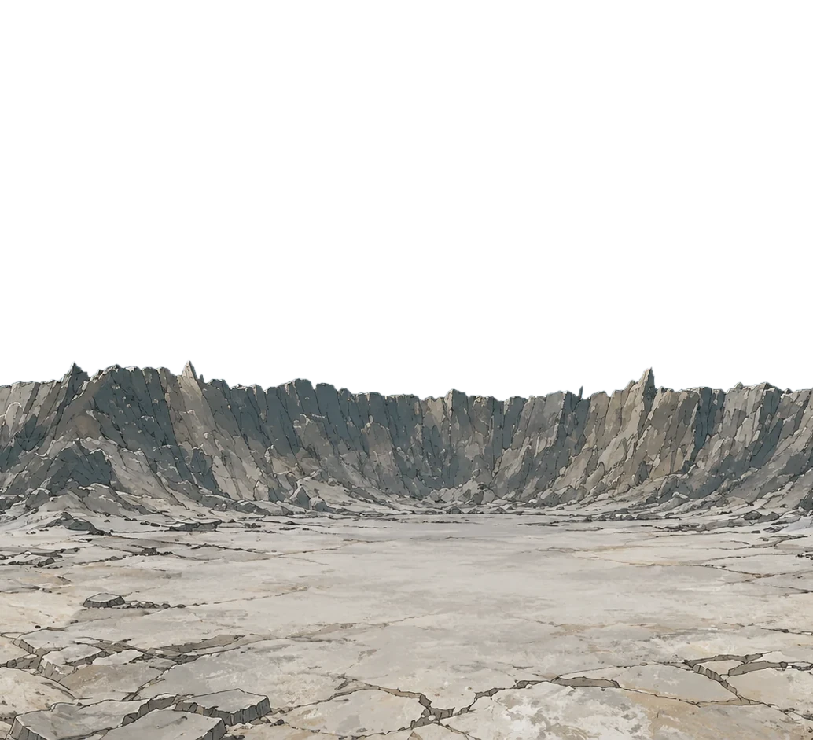
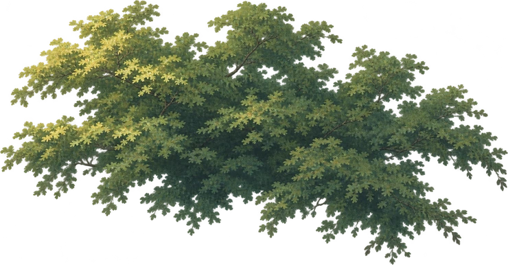
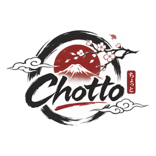

Hồ sơ lừa đảo
Cây Canh
Gác
Kéo ngang nửa khung cảnh để xem mặt sau cây. Cuộn để thu phóng, chạm lá để xem hồ sơ.






Chotto Cộng đồngKéo ngang nửa khung cảnh để xem mặt sau cây. Cuộn để thu phóng, chạm lá để xem hồ sơ.
Đang kết nối…
Chưa có tin nhắn. Gửi lời chào đầu tiên nhé!
Tin nhắn trong phòng này hiển thị công khai.